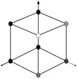
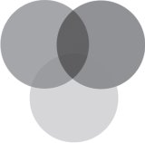
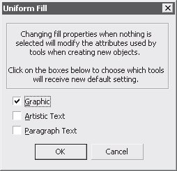
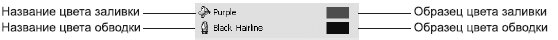
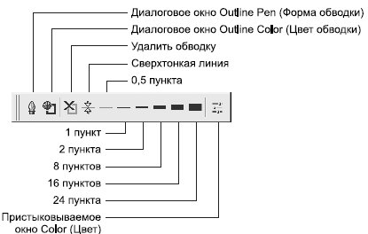
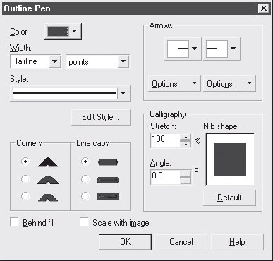

Лекция 8: Цвет и окрашивание объектов
Общие сведения
Для чего нужен цвет
Определенным образом подобранные цвета могут как привлечь внимание к изображению, так и оттолкнуть от него. Это объясняется тем, что в зависимости от того, какой цвет видит человек, у него возникают различные эмоции, подсознательно формирующие первое впечатление о видимом объекте.
Влияние цвета на человека и соответствующие этому правила применения цвета в дизайнерских работах рассмотрены в подразделе "Цвет" "Основы компьютерной графики" .
Итак, для чего же все-таки нужен цвет в компьютерной графике?
Во-первых, конечно же, он несет в себе определенную информацию об объектах. Например, летом деревья зеленые, осенью — желтые. На черно-белой фотографии определить пору года практически невозможно, если на это не указывают какие-либо дополнительные детали.
Цвет необходим для того, чтобы различать объекты.
С его помощью можно вывести одни части изображения на первый план, другие сделать фоновыми, то есть акцентировать внимание на важном — композиционном центре.
При помощи цвета можно передать некоторые детали изображения без увеличения их размера.
В двухмерной графике, а именно такую мы видим на мониторе, при помощи цвета, точнее, его оттенков, имитируется объем.
Цвет используется для привлечения внимания зрителя, создания красочного и интересного изображения.
Можно создавать и великолепные черно-белые изображения, но так как мы живем в цветном мире, то намного привычнее видеть красочные предметы.
Цветовые модели
Для точного описания цветов созданы различные теоретические модели, которые позволяют описывать широкий диапазон цветов "сухим" языком цифр. Проблемы различных моделей заключаются в том, что они не могут охватить все цвета целиком, например, в CMYK нельзя создать ярко-синий, так как он не передается при полиграфической печати. В свою очередь RGB и HSB позволяют реализовать вышеупомянутый цвет, но не дают насыщенного оранжевого, а металлический блеск в данных цветовых моделях можно только имитировать.
При профессиональной работе чаще всего приходится совмещать различные цветовые пространства, так как каждое из них хорошо в отдельно взятой области. Что-бы добиться действительно удачного результата, не получится ограничиться одной моделью.
Подробное описание моделей приведено ниже, здесь перечислим только их основные свойства:
CMYK используется при допечатной подготовке изображений, так как образование цветов полностью соответствует тому, которое происходит в процессе печати;
RGB применяется при работе с изображениями, которые после будут просматриваться на мониторе;
в HSB и Lab есть отдельный канал освещенности, позволяющий делать цвета более насыщенными эффективнее и быстрее, нежели в любой другой модели.
По принципу образования цветов выделяют две большие группы: аддитивную (например, RGB) и субтрактивную (CMYK).
В первом случае цвет образуется при помощи световых лучей люминофоров("пучками" световых лучей): красного, зеленого и синего. Если все они максимально яркие, то результирующим будет белый цвет, при их отсутствии — черный.
Во втором случае наоборот — работает принцип наложения краски на белый лист бумаги (печать). Изначально, при отсутствии каких-либо составляющих, цвет — белый, затем при наложении остальных цветов они смешиваются и в результате образуют черный.
Таким образом, когда мы смотрим на монитор, то видим пример реализации аддтивной модели цветов, однако после печати она автоматически переходит в субтрактивную.
RGB
Это одна из наиболее распространенных моделей. Она применяется в приборах,излучающих свет, таких, например, как мониторы, телевизоры, прожекторы, фильтры и другие подобные устройства. Это можно заметить, присмотревшись к монитору. Будет видно, что белый цвет создается тремя люминофорами: красным, зеленым и синим.
Модель RGB базируется на трех основных цветах: красном (Red), зеленом (Green) и синем (Blue). Каждая составляющая может варьироваться в пределах от 0 до 255, образовывая разные цвета и обеспечивая таким образом доступ ко всем 16 млн оттенков.
Для наглядности все цвета, входящие в данную цветовую модель, можно представить в виде куба. Если принять максимальное излучение каждого люминофора за единицу и отложить их по осям XYZ в декартовой системе координат, то получится графическая интерпретация рассматриваемого цветового пространства.
Причем в точке, в которой все величины равны нулю, будет располагаться черный цвет, а там, где все они будут принимать максимальное значение, — белый (рис. 8.1).
Рис. 8.1. Цветовой куб
Главная диагональ такого куба, проходящая от черного (0, 0, 0) к белому (1, 1, 1) цвету, называется ахроматической осью, или шкалой яркости.
Цветовая модель RGB является аддитивной. При увеличении яркости отдельных составляющих будет увеличиваться и яркость результирующего цвета, то есть если смешать все три цвета с максимальной интенсивностью, то результатом будет белый цвет. Напротив, при отсутствии всех цветов получается черный (рис. 8.2).
Рис. 8.2. Наложение цветов в модели RGB
При наложении отдельных каналов результат получается не совсем такой, как если бы смешивались краски, поэтому рассмотрим каждое сочетание подробнее:
при смешении красного и зеленого результатом будет желтый;
зеленого и синего — голубой, что ближе к результату, получаемому на палитре;
синего и красного — фиолетовый, причем при изменении пропорций смешиваемых цветов можно получать как розовые, так и пурпурные оттенки.
Несомненными достоинствами данного режима является то, что он позволяет работать со всеми 16 млн цветов (однако не совсем удачными получаются оттенки ярко-оранжевого). Недостаток же в том, что при выводе изображения на печать часть цветов RGB теряется (в основном — самые яркие и насыщенные), также возникает проблема с оттенками синего цвета.
HSB и Lab
Заглавные буквы в названии модели HSB не соответствуют конкретным цветам, а обозначают цвет (Hue), насыщенность (Saturation) и яркость (Brightness).
Все цвета располагаются по кругу, и каждому соответствует свой градус, то есть всего насчитывается 360 вариантов (красный — 0°, желтый — 60°, зеленый — 120° и т. д.). Наиболее точной графической интерпретацией данной модели будет цилиндр, точнее, конус.
Насыщенность определяет, насколько ярко выраженным будет выбранный цвет: 0 — серый, 100 — самый яркий и чистый из возможных вариантов.
Понятие яркости соответствует общепринятому, то есть при нулевой яркости получается черный цвет.
Цветовая модель HSB намного "беднее" рассмотренной ранее RGB, так как позволяет работать всего лишь с 3 млн цветов.
Модель Lab похожа на HSB, она состоит из трех составляющих — L, а и b — но они имеют не столь очевидный смысл, как H, S и B.
Буквой L обозначается яркость (Luminosity) цветов, образованных составляющими a и b.
Белый цвет соответствует максимальной интенсивности.
Построение других каналов выглядит более запутанным:
a — содержит цвета от темно-зеленого через серый к розовому;
b — от светло-синего через серый к ярко-желтому.
CMYK
Это одна из наиболее часто используемых цветовых моделей, нашедших широкое применение. Она является субтрактивной, то есть предполагает, что одни составляющие световой волны поглощаются, а другие отражаются. Например, если провести на бумаге полосу красной краской, то большая часть спектра будет поглощаться, а красная часть — рассеиваться. В результате мы воспримем полосу как красную.
Основные цвета в субтрактивной модели отличаются от цветов в аддитивной: голубой (Cyan), пурпурный (Magenta), желтый (Yellow). При смешении этих цветов чистый черный цвет не получается, поэтому при печати обычно добавляют еще одну краску — черную, которая позволяет добиваться большей плотности цвета и используется для печати черных объектов (например, текста).
Использование таких цветов в CMYK обусловлено тем, что голубая краска поглощает лишь красный цвет, пурпурная — зеленый, желтая — синий.
При смешении отдельных цветовых составляющих можно получить следующие результаты.
Голубой + Пурпурный = Фиолетовый. Получаемый в данном случае цвет может изменяться от синего до пурпурного в зависимости от пропорций смешиваемых цветов.
Пурпурный+ Желтый = Красный. В зависимости от соотношения исходных цветов может получиться оранжевый или розовый.
Желтый + Голубой = Зеленый. В результате может получиться салатовый или изумрудный.
Графически такое смешение представлено на рис. 8.3.
Рис. 8.3. Смешение цветов в модели CMYK
Несмотря на большие различия в цветовых моделях RGB и CMYK, следует освоить обе, так как каждая применяется в своей области, и если вы занимаетесь графикой, то столкновения с ними не избежать.
Если вы готовите изображение для печати, то следует работать с CMYK, потому что в противном случае то, что вы увидите на мониторе, и то, что получите на бумаге, будет отличаться настолько, что всю работу придется переделывать.
Grayscale
Это черно-белый режим, который полностью лишен цвета, в нем есть только белый, черный и 254 градаций серого.
Данная цветовая модель состоит всего из одного канала, который полностью соответствует изображению и выглядит как обычная черно-белая фотография.
Окрашивание объектов
Цветовые палитры
Самый простой способ окрашивания в CorelDRAW — применение цветовых палитр, о которых подробно было рассказано в подразделе "Цветовая палитра" (см. "Первое знакомство.Интерфейс программы" ). Щелчок левой клавишей мыши на образце цвета на палитре изменяет окраску заливки, правой клавишей — окраску обводки.
ВНИМАНИЕ.Если в момент щелчка не выделен ни один объект, появится предупреждение (рис. 8.4) о том, что данный цвет будет присваиваться всем объектам при их создании. В окне можно выбрать, какие типы объектов окрасятся выбранным цветом по умолчанию: Graphic (Графика) — все векторные не текстовые объекты, Artistic Text (Строчный текст) или Paragraph Text (Абзацный текст) (см. "Работа с текстом" ).
Рис. 8.4. Предупреждение о выборе цвета по умолчанию
С помощью подменю Window \Rightarrow Color Palettes (Окно \Rightarrow Цветовые палитры) можно вызвать несколько палитр и пользоваться ими одновременно.
Чтобы уточнить, как окрашен объект, достаточно выделить его и посмотреть на правую часть строки состояния (рис. 8.5).
СОВЕТ.Выбирайте те палитры, которые наиболее подходят для выполнения определенной работы. Например, при подготовке документа к полиграфической печати используйте Default CMYK palette (Палитра CMYK по умолчанию) и палитры PANTONE. Если вы создаете web-графику, вам пригодятся Default RGB palette (Палитра RGB по умолчанию), web-safe colors (web-безопасные цвета) и, возможно, SVG colors (цвета SVG). Лишние палитры лучше не включать.
Рис. 8.5. Правая часть строки состояния при выделении окрашенного объекта
При двойном щелчке на образце цвета обводки или заливки вызывается диалоговое окно, вид которого зависит от конкретного типа окраски объекта (см. ниже).
Группа инструментов Outline (Обводка)
Инструменты группы Outline (Обводка) предоставляют полные возможности по управлению видом и цветом обводки.
Диалоговое окно Outline Pen (Форма обводки)
Вызывает диалоговое окно Outline Pen (Форма обводки) (рис. 8.6), в котором можно изменить параметры обводки выделенного объекта.
Данное окно содержит следующие настройки.
Color (Цвет).
Width (Толщина).
Style (Стиль штриховки).
Corners (Тип соединения линий).
Рис. 8.6. Диалоговое окно Outline Pen (Форма обводки)
Line naps .(Тип окончания линий).
Behind fill (Под заливкой) — если этот флажок установлен, половина толщины обводки "прячется" под заливкой.
Scale with image (Изменять с объектом) — если этот флажок установлен, толщина обводки изменяется пропорционально размерам объекта.
Arrows (Стрелки) — тип и размеры стрелок на концах линий.
Calligraphy (Каллиграфическое перо) — позволяет задать толщину и наклон каллиграфического пера, в результате чего толщина обводки будет зависеть от угла, под которым она проходит.
СОВЕТ.Авторы рекомендуют пользоваться не этим диалоговым окном, а настройками на панели свойств, появляющимися при выделении векторного объекта.